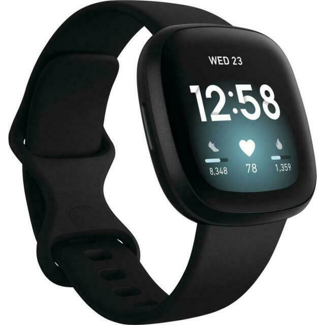
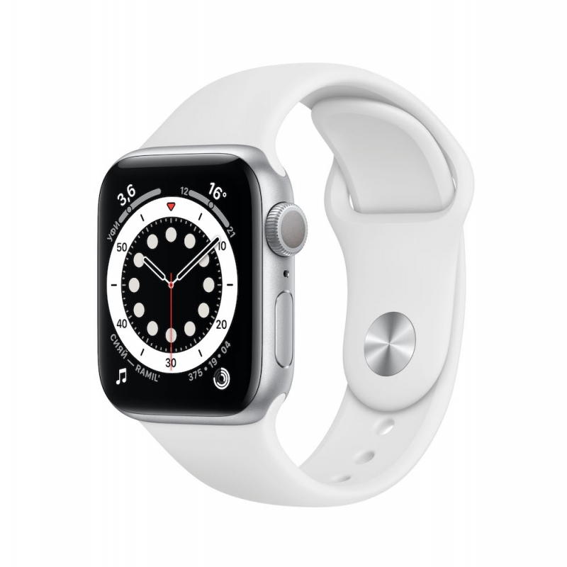
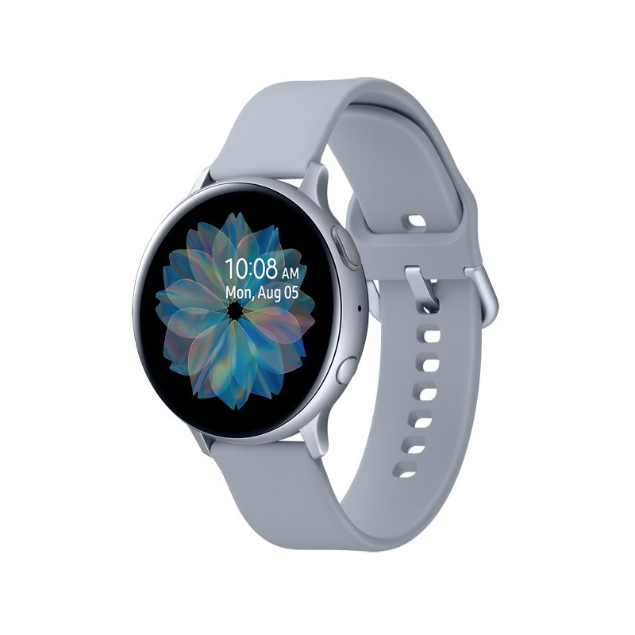
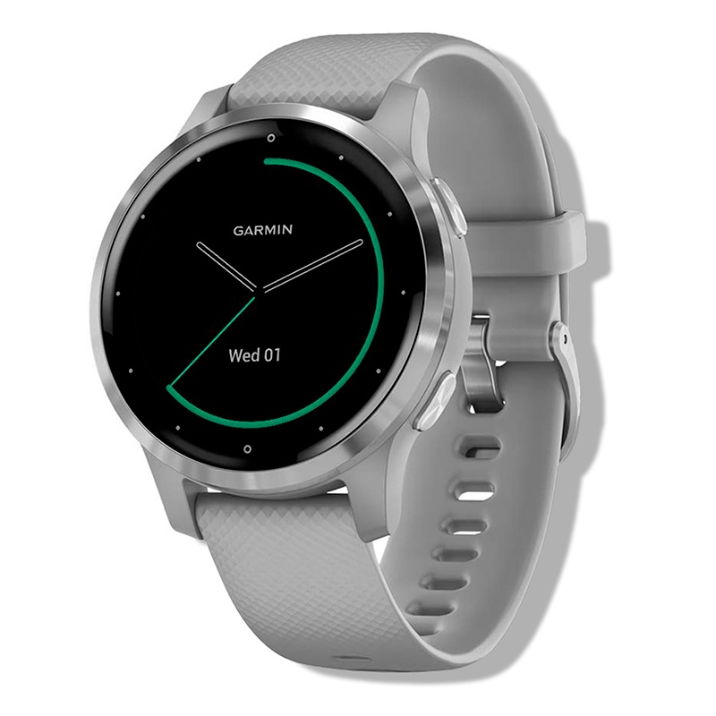
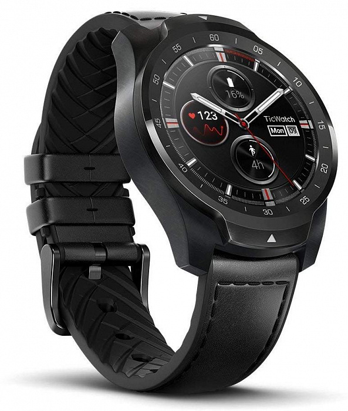

skip to main contant
The Best Smart Watches for 2023
Fitbit Versa 3
Pros and Cons
- 
- 5 gigs of onboard storage
- 3 days of battery life
- Possible to adjust the watch to the lifestyle.
Cons:
- Limited functionality on iOS.
Apple Watch Series 6
Pros and Cons
- 
- Legendary Apple device now cheaper!
- The screen is bright and clear.
- The fitness features are numerous and amazing.
Cons:
- Only works together with iPhone, no true independency.
Samsung Galaxy Watch Active 2
Pros and Cons
- 
- Great and comfortable dial control.
- The battery is alive for 2 days!
- The design is minimalistic, but yet attractive.
Cons:
- Third-party apps are quite few here.
Garmin Vivoactive 4S
Pros and Cons
- 
- Amazing accuracy of counting steps.
- Great battery life.
- Smooth and clear app interface.
Cons:
- Apps usage kills the battery quite fast.
TicWatch Pro
Pros and Cons
- 
- Easy to operate.
- Longer battery life due to simple interface.
Cons:
- Unable to use several functions at the same time.